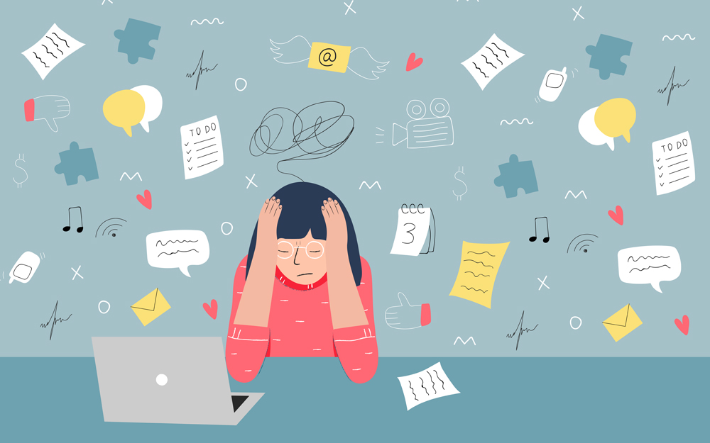
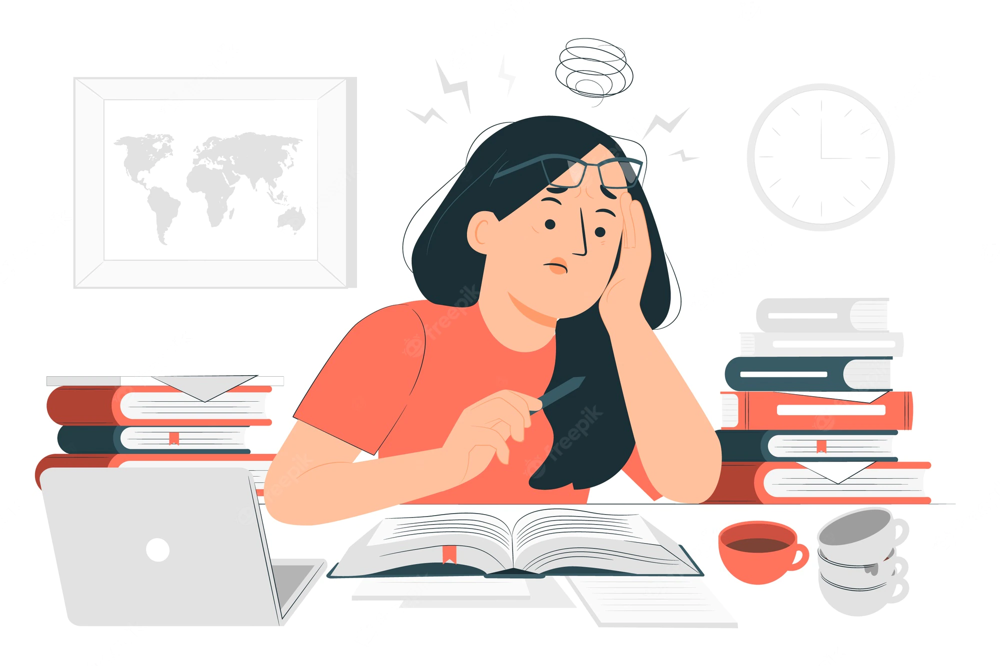
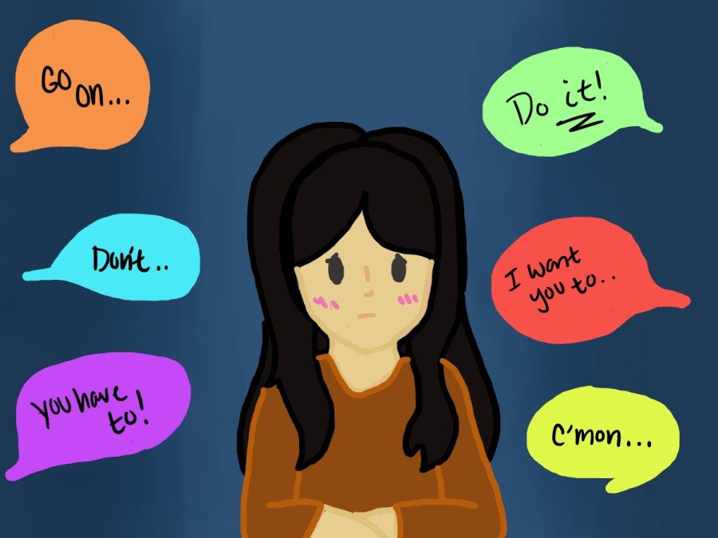

Photo: Cedars-Sinai
Stress is defined to be the state of mental or emotinal strain or tension resulting from adverse or demanding
circumstances. In simpler terms, it is our brain's response to difficult situations, causing us to experience stress.
Interestingly, stress is not all that bad. Stress, in small amounts, is actually good for us as it
motivates us to excel and overcome the challenges that are giving us stress. However, when we face too much
stress, it can be bad, especially when it causes us to show symptoms, which are detailed in the next page.
High Expectations

Photo: Freepik
Stress can be caused when we place high, difficult to meet standards on ourselves, or experience the pressure to
live up to high standards set by others, for example: our parents expecting us to achieve As in every subject.
Such expectations cause us to worry about performing up to standard in exams due to the fear of disappointing our
parents. It is such expectations that cause many students around the world to feel stressed out.
Peer Pressure

Photo: PLD Lamplighter
Stress can also result from peer pressure. Peer pressure is caused when you want to do something that would
appease your peers. Here's a scenario you can think about to better understand peer pressure: Your friends are
trying out a new activity and they ask you to join them, but you feel that you don't like this activity. This
results in a dilemma in your head because you are torn between appeasing your friends by joining them, or probably
upsetting them because you didn't want to join them. Because of this dilemma, you keep on thinking about it all
the time. This is peer pressure, and too much of it can cause you to become stressed out because you aren't able
to come to a decision.
Now, you may be wondering whether you are stressed out. The next page will help
you find out if you're stressed, so read on!